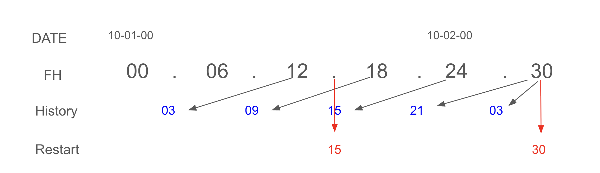
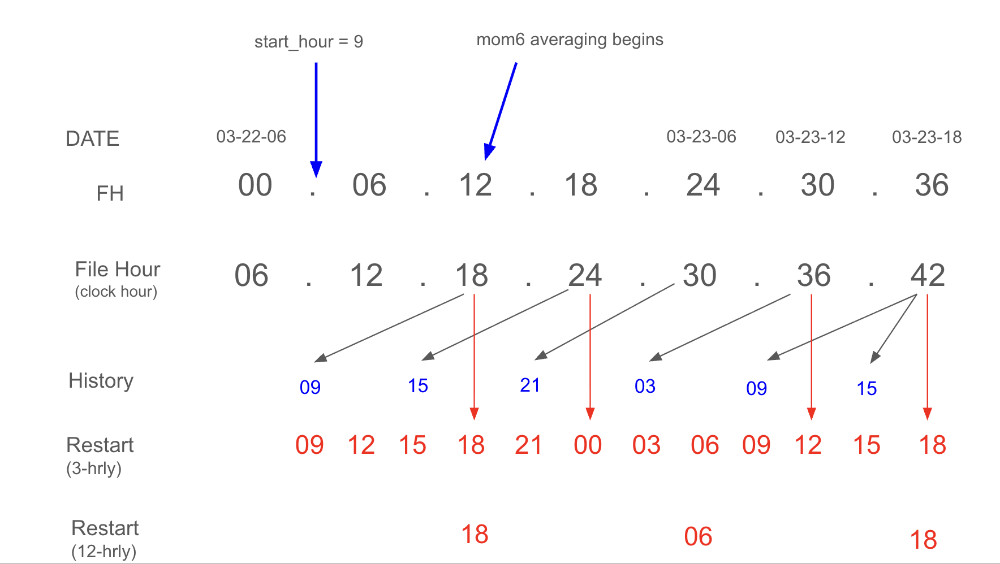

|
MOM6 Outputlog Feature & Unit Tests
|
The MOM6 output logging feature is designed to track the completion of MOM6 history and restart files during a model run. This feature is specific to UWM operational requirements and configurations (eg specific output frequencies in hours) and may break if used outside the scope of intended use.
The feature is enabled by adding a namelist to the model input.nml which can be used to define the file names, frequencies and types (snapshot or averages) which are to be tracked. The user is responsible for ensuring that these settings match the contents of the diag_table in use by the model. From the user-configuration, one or more Alarms are enabled at the desired frequencies. When an Alarm rings, a filename is constructed referencing the model time and the initial state of the file is recorded. Depending on configuration, an output file can have an unlimited dimension greater than zero at creation time. This necessitates checking for an additional criteria using the filesize at creation. Depending on the characteristics of the file at creation, the criteria to declare a file complete is set.
The file state will be checked at each suceeding ModelAdvance until the appropriate completion criteria is met: either when the unlimited dimension in the file is greater than zero or when the unlimited dimension is greater than zero and the filesize is larger than the initial size. When a file is determined to be complete, a log file is recorded containing the forecast hour, the valid time, the name of the output file and the last completed restart file. Depending on configuration, the final file and the next-to-final file can be closed at the stop time. Therefore a different log file name is required for the final log file, otherwise the next-to-final log is overwritten
To illustrate the concepts implemented in the output logging feature, consider the following diagram:
!>

In this case, MOM6 is providing 6-hourly output; the model begins at hour=00 and runs for 30 hours; the output alarm will ring every 6 hours. It is important to remember that alarms ring at the ModelAdvance nextTime. If the model in this case is running with a 30 minute coupling frequency, the alarm at hour=12:00 will ring at the modelAdvance when the currTime = 11:30 and the nextTime = 12:00.
MOM6 history files for time-averaged output are timestamped at the middle of the averaging window. The first MOM6 history output file produced is the hour=03 file, representing the average between hours 0 and 6. It will be created when the alarm rings at nextTime=12:00 and be completed on the next timestep. When the model stops, there are two final history files that are written: the "pending" file (h=21) as well as the final 03 file.
Restarts for MOM6 are written by MOM6 directly, not using FMS as for the history files. Model restarts are written, complete, at whatever frequency or hour requested. In the above diagram, restarts written at a 15-hour frequency will be written exactly at those hours.
The output log file written at forecast hour=24 for this case (20111002.000000.mom6.06h) would contain the following information:
The output log feature is enabled with a MOM_outputlog_nml namelist added to the input.nml. For example, the following values will set the logging feature to track 6-hourly files, which (using the diag_table) have a filename prefix of ocn and are defined as time-averaged values. No debug information will be added to the stdout file.
The following rules apply the namelist options for output logging:
File tracking can be enabled for 1,3,6 or 24 hourly files only. Multiple frequencies can be requested and the listed order is immaterial. However, each logging frequency must be uniquely defined. For example, 6-hourly average files and 6-hourly snapshot files are not allowed but 6-hourly average and 3-hourly snapshot files are.
If a single frequency is requested, no filename prefix is required. A default prefix of ocn_ will be used. It is the user's responsibility that the default matches the specification in the diag_table. Otherwise, they must set the actual filename prefix called for in the diag_table. If more than a single frequency is requested, the user must provide filename prefixes for all frequencies (again ensuring matches to the diag_table). The filename prefix can have a maximum length of 12 (not including the trailing underscore, which will be appended).
Either instantaneous (snapshot) files or time averaged files are supported. These are specified by treduce settings of none and average, respectfully. The file name format for time averaged output is asssumed to be timestamped with the mid-point of the averaging window (i.e. hour=09 for the 6h-12h average). For snapshot output, the timestamp will be the time of the snapshot. The user is responsible for ensuring that the diag_table in use matches these definitions.
!>
